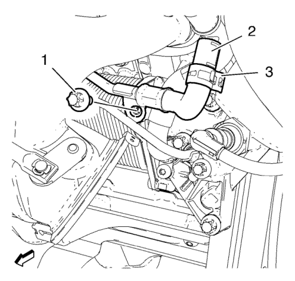
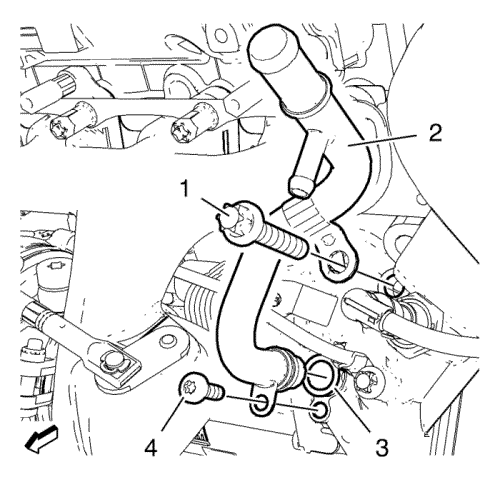

Sustitución del tubo de entrada del radiador de aceite del motor — 1.4L LUH, LUJ
Procedimiento de desmontaje
- Extraiga el refrigerante. Consultar Drenaje y llenado del sistema de refrigeración .
- Desmonte el catalizador de calefacción de tres vías. Consulte Sustitución del catalizador de tres vías de calentamiento → 1.4L LUH y LUJ.
- Desmonte el tubo flexible de entrada del radiador de aceite del motor del tubo de entrada del radiador de aceite del motor. Consulte Sustitución del tubo flexible de entrada del radiador de aceite del motor → 1.4L LUH y LUJ.

- Retire la abrazadera del tubo flexible de la tubería de retorno de refrigerante del turbocompresor (3).
- Retire el tubo flexible de la tubería de retorno del refrigerante del turbocompresor (2) de la tubería de entrada del radiador de aceite.
Nota: No mueva demasiado la tubería de retorno de refrigerante del turbocompresor. Un movimiento excesivo de la tubería de retorno de refrigerante del turbocompresor podría provocar una fuga.
- Retire los tornillos (1) de la tubería de retorno de refrigerante del turbocompresor.

- Desmonte el tornillo del radiador de aceite del motor (1).
- Retire el tornillo del tubo de entrada del refrigerador de aceite del motor (4).
- Retire el tubo de entrada del radiador de aceite del motor (2) y el anillo de junta (3).
Procedimiento de montaje
- Monte el tubo de entrada del radiador de aceite de motor (2) junto con un anillo de junta NUEVO (3).
- Monte el tornillo del radiador de aceite del motor (1).
Precaución:Consulte Precaución con las fijaciones en la sección Prólogo.
- Coloque el perno (4) de la tubería de entrada del radiador de aceite del motor y apriételo a 10 N·m (89 lib. pulg.).
- Apriete el tornillo del radiador de aceite del motor (1) a 20 N·m (15 lib. pie).
- Monte el tubo flexible de la tubería de retorno del refrigerante del turbocompresor (2) en la tubería de entrada del radiador de aceite.
- Monte la abrazadera del tubo flexible de la tubería de retorno de refrigerante del turbocompresor (3).
- Coloque el perno (1) de la tubería de retorno del turbocompresor y apriételo a 10 N·m (89 lib. pulg.).
- Monte el tubo flexible de entrada del radiador de aceite del motor en el tubo de entrada del radiador de aceite del motor. Consulte Sustitución del tubo flexible de entrada del radiador de aceite del motor → 1.4L LUH y LUJ.
- Monte el catalizador de calefacción de tres vías. Consulte Sustitución del catalizador de tres vías de calentamiento → 1.4L LUH y LUJ.
- Llene de refrigerante. Consultar Drenaje y llenado del sistema de refrigeración .
| © Copyright Chevrolet. All rights reserved |